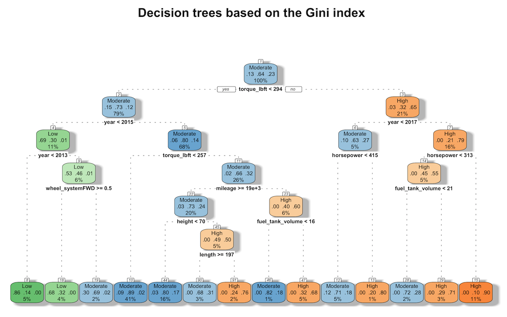
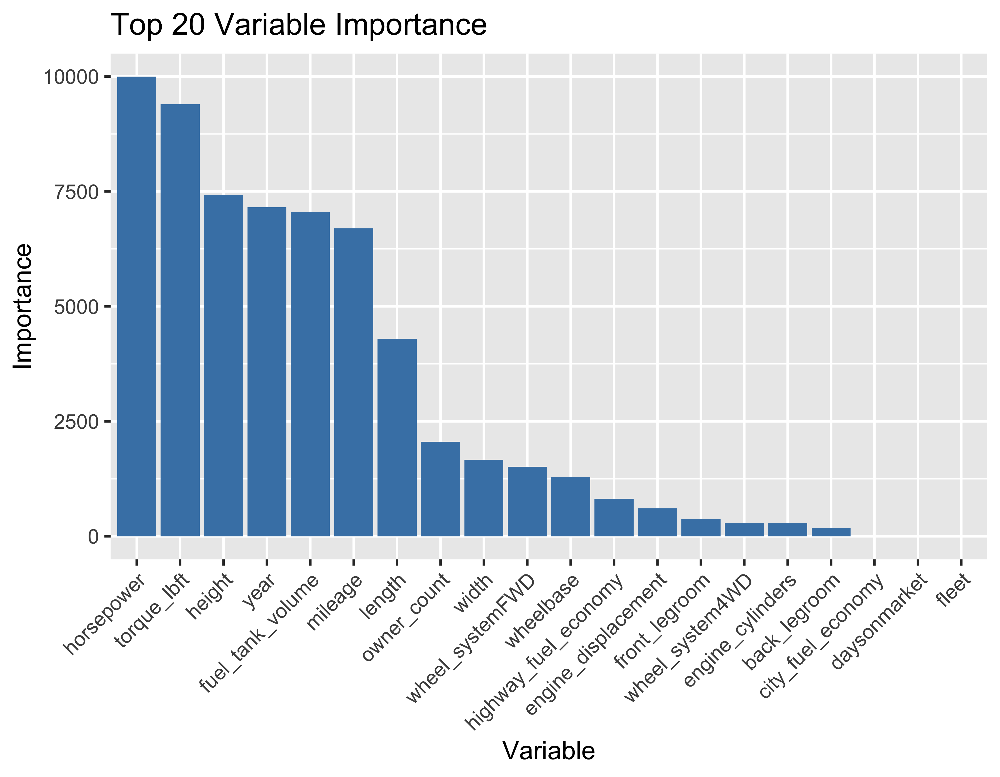
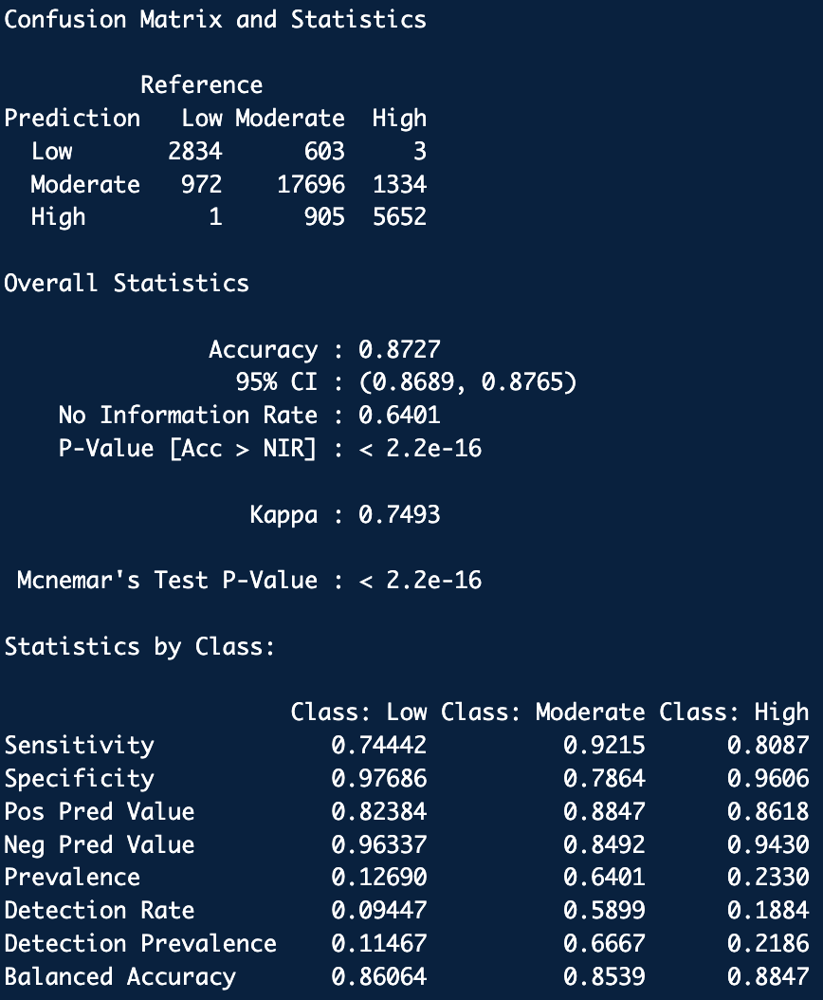
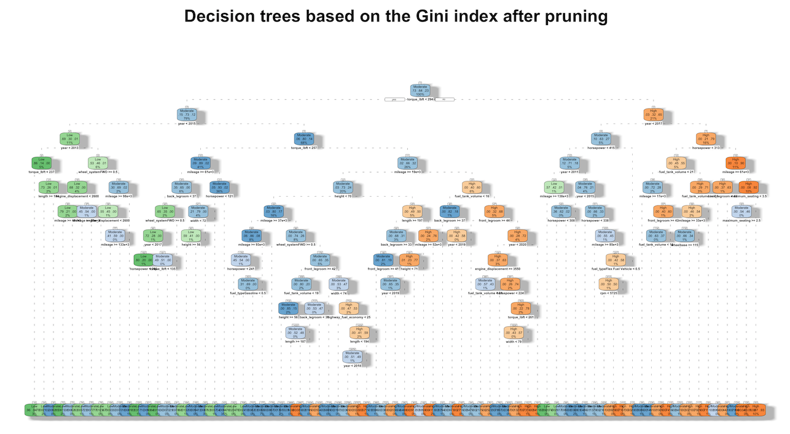
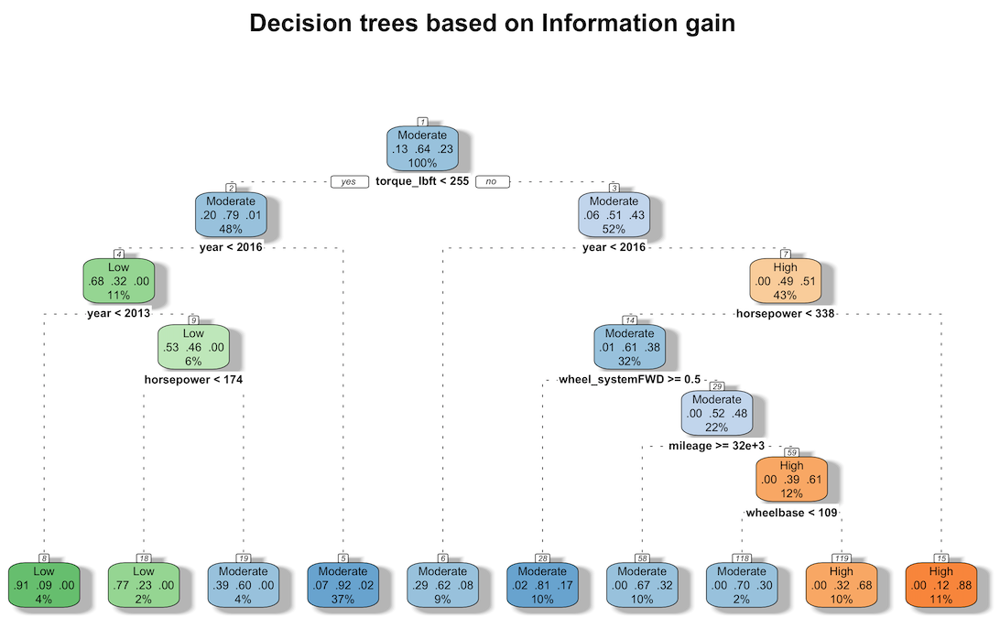
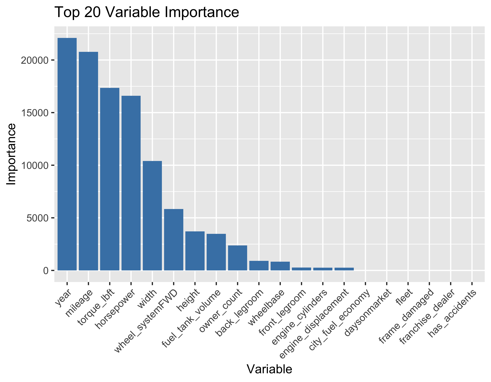

This analysis identified the specific factors that influence vehicle pricing by categorizing vehicles into specific price ranges based on a decision tree. It also allowed us to determine which characteristics have the most significant impact on deciding vehicle pricing. Two primary impurity measures, Gini Impurity and Information Gain, were applied when performing the decision tree.
First, perform a decision tree analysis based on the training data. The rpart function provided by the 'rpart' package was utilized. The default impurity parameter of the rpart function is gini. Therefore, if you do not add a separate parameter, build a trained decision tree model based on gini impurity. The visualization of this model in the form of a tree is shown below.
In the tree above, the various attributes are printed out, which gives an idea of the importance of the attributes. The analysis shows that 'torque_lbft', 'year', 'mileage', 'height', 'length', and 'horsepower' are the most critical attributes that affect the price of a vehicle, which suggests that these attributes play an essential role in determining the price range of a vehicle. Looking more closely at the values of each node in the tree, the entire dataset is classified. At the initial node, the 70000 observations are divided into Moderate, Low, and High categories, with proportions of 0.13, 0.64, and 0.23, respectively. Then, at the first branch, the data is categorized based on whether "torque_lbft" is less than 294: if torque_lbft < 294, the proportion of Moderate is high, and if torque_lbft >= 294, the proportion of High is high. The torque value, which measures the rotational force of the engine, or the force needed to move the vehicle, is 294, so if the value is higher than 294, it means that there are more vehicles in the higher price range. Next, the data is categorized based on the 'year' attribute: if year < 2015, it falls into Low, and if year >= 2015, it falls into Moderate. It means that vehicles older than 2014 are categorized as lower priced. In addition, for 'mileage', a value greater than 19,000 is associated with a lower price point. Using this approach with other characteristics, it can be observed that FWD is more expensive than AWD, and the newer the car, the higher the price.
This model allows us to understand the importance of the variables (characteristics). The bar plot below shows the impact of each variable on the overall model's predictions for a given dataset.
This importance is calculated based on how much information a given attribute provides to the model's predictions. Variables with high importance have a large impact on the model's predictions, while variables with low importance may be less important to the predictions or can be ignored. Thus, 'horsepower' and 'torque_lbft' have the highest importance, while 'width', 'owner_count', 'length', 'mileage', 'fuel_tank_volume', etc. have medium importance.
Based on this model, predictions were made based on the test data. It allows the model to predict which class each sample in the test dataset belongs to, which can be represented as a confusion matrix. You can generate a confusion matrix based on the model's predictions. To do this, you can compare the actual label with the label predicted by the model and calculate True Positives (TP), True Negatives (TN), False Positives (FP), and False Negatives (FN) for each combination. You can construct a confusion matrix based on these values to evaluate your model's classification performance. Here's a quick primer on this
| - True Positives (TP): | The number of times you correctly predicted a vehicle price as "low" when it was actually "low". |
| - True Negatives (TN): | Number of cases where the price of a vehicle was correctly predicted as 'medium' when it was actually 'medium'. |
| - False Positives (FP): | The number of times the model incorrectly predicted a vehicle price as 'low' when it was actually 'medium' or 'high' (the model incorrectly categorized it as 'low'). |
| - False Negatives (FN): | The number of times the model incorrectly predicted a vehicle price as 'low' when it was actually 'low' (the model failed to classify it as 'low'). |
The result of performing a decision tree with the Gini index can be represented as a confusion matrix.
Based on the confusion matrix above, we can get four evaluation metrics for this model as follows. The Method below is the impurity measure, Gini means that the Gini Index is applied, and Minsplit and Maxdepth are -1, which means that the default values are applied.
| X.Method | Minsplit | Maxdepth | Class | Accuracy | Precision | Recall | F1_Score |
|---|---|---|---|---|---|---|---|
| Gini | -1 | -1 | Low | 0.8235667 | 0.5518781 | 0.7877765 | 0.6490578 |
| Gini | -1 | -1 | Moderate | 0.8235667 | 0.9060092 | 0.8332455 | 0.8681053 |
| Gini | -1 | -1 | High | 0.8235667 | 0.7450279 | 0.8070366 | 0.7747935 |
Let's look at the above results for each class. First, for the Low class, the accuracy is 0.8235667, meaning that 82.36% of the vehicles in the 'Low' class were correctly classified. Precision is 0.5518781, meaning that 55.19% of the vehicles predicted to be in the 'Low' class actually belong to the 'Low' class. The recall is 0.7877765, meaning that the model correctly detected 78.78% of the vehicles actually in the 'Low' class. The F1_Score is 0.6490578, the harmonic mean of Accuracy and Recall, and comprehensively evaluates the model's predictive performance for class 'Low'.
Next, for the Moderate class, the accuracy is 0.8235667, meaning that 82.36% of the vehicles in the 'Moderate' class were correctly classified. Precision is 0.9060092, meaning that 90.60% of the vehicles predicted to be in the 'Moderate' class are actually in the 'Moderate' class. The recall is 0.8332455, meaning that the model correctly detected 83.32% of the vehicles actually in the 'Moderate' class. The model's prediction performance for class 'Moderate' is evaluated by the F1_Score, which is 0.8681053, which is the harmonized average of precision and recall.
Finally, for the High class, the accuracy is 0.8235667, meaning that 82.36% of the vehicles in the 'High' class were correctly classified. Precision is 0.7450279, meaning that 74.50% of the vehicles predicted to be in the 'High' class belong to the 'High' class. The recall is 0.8070366, meaning that the model correctly detected 80.70% of the vehicles belonging to the 'High' class. F1_Score is 0.7747935, the harmonic mean of precision and recall, and comprehensively evaluates the model's prediction performance for class 'High'.
Based on the above results, the accuracy for each class (price category) is the same at 0.8235667. Looking at the differences between the classes, the 'Low' class has a relatively low precision and a high recall, which suggests that the model can identify most of the 'Low' class samples. However, some of the samples belonging to the 'Low' class are misclassified into other classes. The 'Moderate' class also shows a high precision and recall. It indicates that the model tends to make more accurate predictions for the 'Moderate' class. Finally, the 'High' class has medium precision and high recall, suggesting that the model can identify most of the 'High' class samples, although some of the 'High' class samples are misclassified to other classes.
Pruning in a decision tree is the process of removing some branches of the tree to reduce the complexity of the model. This is used to prevent overfitting of the model and improve its generalization ability. Pruning simplifies the model by reducing the depth of the tree or removing unnecessary branches. You can perform post-pruning using the rpart function. It allows you to adjust the complexity parameter and control the complexity of the model. This parameter, CP, stands for "Cost Complexity" and is the metric used to prune the decision tree. By lowering the CP value, more pruning can be done to increase accuracy. When running the RPART function, if there is no setting for the CP parameter, it is performed with the default value of 0.01. If pruning is performed by lowering the CP value to 0.001, which is lower than the default value of 0.01, the following results are obtained.
The accuracy increased from 0.8235667 before pruning to 0.8727, an increase of about 0.5. This suggests that the performance has improved in terms of accuracy alone. However, the figure below shows a different interpretation.
In the figure above, the depth of the tree looks very deep and complex. Increasing the depth of the tree through pruning like this can make interpretation difficult. More complex models are more challenging to interpret, and it can be not easy to understand the criteria used by the model to make certain decisions. In addition, excessive pruning can lead to an underfitting of the model, meaning that it can be challenging to tune the parameters of a model that includes pruning. Experimentation with different parameter values, using cross-validation and so on, is required to find the appropriate pruning level. Therefore, for this decision tree step, no pruning was performed given the model's performance, complexity, and ease of interpretation.
Next, the impurity measure (Gini index) was changed to information gain, and decision tree modeling was performed again. The visualization of the model in the form of a tree is shown below.
First, looking at the root node, the percentage of vehicles in the 'Moderate' price range is the highest in the entire dataset (64.35%). This tells us that most used cars fall into the 'Moderate' price range. The decision tree then segments the data and predicts price points based on the continuous variables 'torque_lbft', 'year', 'horsepower', 'mileage', and 'wheelbase' and the discrete variable 'wheel_systemFWD'. For example, it splits the data into cases where 'torque_lbft' is less than or equal to 254.5, and again based on the variable 'year'. At each child node, it predicts the price range of the vehicle based on certain conditions. For example, the 'year' variable is categorized into a 'Moderate' or 'High' price range depending on if it is less than or greater than 2016. Finally, the leaf nodes represent the price points that are finally categorized by the tree. Each price point is also given a probability, so you know what percentage of the data is categorized into that price point. The decision tree above uses variables like 'horsepower', 'mileage', 'wheelbase', and 'torque_lbft' multiple times in the tree to segment the data. These variables play an essential role in determining the price range of a used car. The bar graph below gives a better idea of what variables play a role in determining used car prices.
In the bar plot above, the variables 'year', 'mileage', 'torque_lbft', and 'horsepower' appear to play the most critical role in predicting the price of a used car. These variables have the most impact on partitioning the data in the decision tree. In particular, the age ('year') and mileage ('mileage') have the most impact on determining the price of a used car. Variables related to the vehicle's specs, 'torque_lbft' and 'horsepower', are also important variables. Other variables, such as 'city_fuel_economy', 'daysonmarket', 'fleet', 'frame_damaged', 'franchise_dealer', and 'has_accidents', appear to have a relatively small impact on predicting used car prices.
The result of performing a decision tree with information gain can be represented as a confusion matrix.
Based on the above confusion matrix, we can get 4 evaluation metrics for this model as below. The Method below is the impurity measure and informatin means that we applied information gain. The table below shows the results cumulatively with the results of the Gini index performed earlier.
| X.Method | Minsplit | Maxdepth | Class | Accuracy | Precision | Recall | F1_Score |
|---|---|---|---|---|---|---|---|
| gini | -1 | -1 | Low | 0.8235667 | 0.5518781 | 0.7877765 | 0.6490578 |
| gini | -1 | -1 | Moderate | 0.8235667 | 0.9060092 | 0.8332455 | 0.8681053 |
| gini | -1 | -1 | High | 0.8235667 | 0.7450279 | 0.8070366 | 0.7747935 |
| information | -1 | -1 | Low | 0.8037000 | 0.4415550 | 0.8602866 | 0.5835792 |
| information | -1 | -1 | Moderate | 0.8037000 | 0.9152781 | 0.8049551 | 0.8565789 |
| information | -1 | -1 | High | 0.8037000 | 0.6943769 | 0.7814815 | 0.7353587 |
First, for the Low class, the accuracy value shows that about 80.37% of the vehicles belonging to the 'Low' class were correctly classified. The precision shows that 44.16% of the vehicles predicted to be in the Low class are actually in the Low class, and the recall shows that 86.03% of the vehicles in the Low class are correctly detected by the model. The F1 score was calculated as the harmonic mean of precision and recall, with a value of 0.5835792. To summarize these results, the precision is relatively low (44.16%), meaning that few of the cars predicted by the model as 'Low' are actually in the 'Low' class, indicating that the model tends to predict 'Low'.
For the Moderate class, 80.37% of the vehicles belonging to the 'Moderate' class are correctly classified. The percentage of vehicles predicted to be 'Moderate' that actually belong to the 'Moderate' class is 91.53%. And 80.50% of the vehicles actually belonging to the 'Moderate' class are correctly detected by the model. The F1 score of the model for this class is 0. 8565789. Based on these results, for the 'Moderate' class, the model has high accuracy and precision. 91.53% of the vehicles predicted to be 'Moderate' actually belong to the 'Moderate' class, and the recall is 80.50%, which is relatively high. Therefore, the model performs well in identifying the 'Moderate' class.
For the High class, 80.37% of the vehicles belonging to the 'High' class are correctly classified, and the proportion of vehicles predicted to be in the 'High' class that actually belong to the 'High' class is 69.44%. And 78.15% of the vehicles actually belonging to the 'High' class are correctly detected by the model, with an F1 score of 0. In the end, the precision is moderate at 69.44%, the recall is moderate at 78.15%, and the F1 score is moderate at 0.7353587. This suggests that the model's performance for the 'High' class is above a certain level but could be better.
From the above results, the model performs best for the 'Moderate' class, while there is some room for improvement for the 'Low' and 'High' classes.
Adjusting hyperparameters when performing a decision tree allows setting the appropriate model complexity, which can improve the model's performance and prevent overfitting. The model's performance was evaluated by adjusting minsplit and maxdepth, two adjustable hyperparameters in rpart. minsplit refers to the minimum number of data points required to split a node. This parameter limits the tree's growth, preventing the model from continually splitting small nodes. Small minsplit values can produce more complex trees but can also lead to overfitting. Conversely, large minsplit values produce simpler models but can reduce the flexibility of the model. maxdepth limits the maximum tree depth allowed. This allows limiting the growth of the tree to prevent overfitting. Choosing an appropriate maxdepth value can improve the model's ability to generalize. A maxdepth value that is too large can cause the model to overfit the training data, while a maxdepth value that is too small can prevent the model from learning complex patterns in the data. Regarding these two hyperparameters, the model was evaluated by changing each parameter based on the model that applied the Gini index, which was the better performance of the two previous models. The results are shown in the table below. This table accumulates the results of the two models performed earlier.
| X.Method | Minsplit | Maxdepth | Class | Accuracy | Precision | Recall | F1_Score |
|---|---|---|---|---|---|---|---|
| gini | -1 | -1 | Low | 0.8235667 | 0.5518781 | 0.7877765 | 0.6490578 |
| gini | -1 | -1 | Moderate | 0.8235667 | 0.9060092 | 0.8332455 | 0.8681053 |
| gini | -1 | -1 | High | 0.8235667 | 0.7450279 | 0.8070366 | 0.7747935 |
| information | -1 | -1 | Low | 0.8037000 | 0.4415550 | 0.8602866 | 0.5835792 |
| information | -1 | -1 | Moderate | 0.8037000 | 0.9152781 | 0.8049551 | 0.8565789 |
| information | -1 | -1 | High | 0.8037000 | 0.6943769 | 0.7814815 | 0.7353587 |
| gini | 1 | -1 | Low | 0.8235667 | 0.5518781 | 0.7877765 | 0.6490578 |
| gini | 1 | -1 | Moderate | 0.8235667 | 0.9060092 | 0.8332455 | 0.8681053 |
| gini | 1 | -1 | High | 0.8235667 | 0.7450279 | 0.8070366 | 0.7747935 |
| gini | 5 | -1 | Low | 0.8235667 | 0.5518781 | 0.7877765 | 0.6490578 |
| gini | 5 | -1 | Moderate | 0.8235667 | 0.9060092 | 0.8332455 | 0.8681053 |
| gini | 5 | -1 | High | 0.8235667 | 0.7450279 | 0.8070366 | 0.7747935 |
| gini | 10 | -1 | Low | 0.8235667 | 0.5518781 | 0.7877765 | 0.6490578 |
| gini | 10 | -1 | Moderate | 0.8235667 | 0.9060092 | 0.8332455 | 0.8681053 |
| gini | 10 | -1 | High | 0.8235667 | 0.7450279 | 0.8070366 | 0.7747935 |
| gini | 20 | -1 | Low | 0.8235667 | 0.5518781 | 0.7877765 | 0.6490578 |
| gini | 20 | -1 | Moderate | 0.8235667 | 0.9060092 | 0.8332455 | 0.8681053 |
| gini | 20 | -1 | High | 0.8235667 | 0.7450279 | 0.8070366 | 0.7747935 |
| gini | 40 | -1 | Low | 0.8235667 | 0.5518781 | 0.7877765 | 0.6490578 |
| gini | 40 | -1 | Moderate | 0.8235667 | 0.9060092 | 0.8332455 | 0.8681053 |
| gini | 40 | -1 | High | 0.8235667 | 0.7450279 | 0.8070366 | 0.7747935 |
| information | 1 | -1 | Low | 0.8037000 | 0.4415550 | 0.8602866 | 0.5835792 |
| information | 1 | -1 | Moderate | 0.8037000 | 0.9152781 | 0.8049551 | 0.8565789 |
| information | 1 | -1 | High | 0.8037000 | 0.6943769 | 0.7814815 | 0.7353587 |
| information | 5 | -1 | Low | 0.8037000 | 0.4415550 | 0.8602866 | 0.5835792 |
| information | 5 | -1 | Moderate | 0.8037000 | 0.9152781 | 0.8049551 | 0.8565789 |
| information | 5 | -1 | High | 0.8037000 | 0.6943769 | 0.7814815 | 0.7353587 |
| information | 10 | -1 | Low | 0.8037000 | 0.4415550 | 0.8602866 | 0.5835792 |
| information | 10 | -1 | Moderate | 0.8037000 | 0.9152781 | 0.8049551 | 0.8565789 |
| information | 10 | -1 | High | 0.8037000 | 0.6943769 | 0.7814815 | 0.7353587 |
| information | 20 | -1 | Low | 0.8037000 | 0.4415550 | 0.8602866 | 0.5835792 |
| information | 20 | -1 | Moderate | 0.8037000 | 0.9152781 | 0.8049551 | 0.8565789 |
| information | 20 | -1 | High | 0.8037000 | 0.6943769 | 0.7814815 | 0.7353587 |
| information | 40 | -1 | Low | 0.8037000 | 0.4415550 | 0.8602866 | 0.5835792 |
| information | 40 | -1 | Moderate | 0.8037000 | 0.9152781 | 0.8049551 | 0.8565789 |
| information | 40 | -1 | High | 0.8037000 | 0.6943769 | 0.7814815 | 0.7353587 |
| gini | -1 | 2 | Low | 0.7751667 | 0.6109798 | 0.6839165 | 0.6453940 |
| gini | -1 | 2 | Moderate | 0.7751667 | 0.8940325 | 0.7856587 | 0.8363495 |
| gini | -1 | 2 | High | 0.7751667 | 0.5379883 | 0.7922461 | 0.6408181 |
| gini | -1 | 3 | Low | 0.7808333 | 0.6109798 | 0.6839165 | 0.6453940 |
| gini | -1 | 3 | Moderate | 0.7808333 | 0.8916372 | 0.7930987 | 0.8394862 |
| gini | -1 | 3 | High | 0.7808333 | 0.5688940 | 0.7937712 | 0.6627771 |
| gini | -1 | 4 | Low | 0.8079667 | 0.5518781 | 0.7877765 | 0.6490578 |
| gini | -1 | 4 | Moderate | 0.8079667 | 0.9011144 | 0.8177780 | 0.8574260 |
| gini | -1 | 4 | High | 0.8079667 | 0.6915152 | 0.7830525 | 0.7344427 |
| gini | -1 | 5 | Low | 0.8130333 | 0.5518781 | 0.7877765 | 0.6490578 |
| gini | -1 | 5 | Moderate | 0.8130333 | 0.9127786 | 0.8169362 | 0.8622021 |
| gini | -1 | 5 | High | 0.8130333 | 0.6812133 | 0.8102451 | 0.7401477 |
| gini | -1 | 6 | Low | 0.8235667 | 0.5518781 | 0.7877765 | 0.6490578 |
| gini | -1 | 6 | Moderate | 0.8235667 | 0.9060092 | 0.8332455 | 0.8681053 |
| gini | -1 | 6 | High | 0.8235667 | 0.7450279 | 0.8070366 | 0.7747935 |
| gini | -1 | 7 | Low | 0.8235667 | 0.5518781 | 0.7877765 | 0.6490578 |
| gini | -1 | 7 | Moderate | 0.8235667 | 0.9060092 | 0.8332455 | 0.8681053 |
| gini | -1 | 7 | High | 0.8235667 | 0.7450279 | 0.8070366 | 0.7747935 |
| information | -1 | 2 | Low | 0.6874667 | 0.5621224 | 0.6858974 | 0.6178721 |
| information | -1 | 2 | Moderate | 0.6874667 | 0.6221100 | 0.8532353 | 0.7195688 |
| information | -1 | 2 | High | 0.6874667 | 0.9353269 | 0.5076099 | 0.6580762 |
| information | -1 | 3 | Low | 0.7607667 | 0.5621224 | 0.6858974 | 0.6178721 |
| information | -1 | 3 | Moderate | 0.7607667 | 0.9293376 | 0.7542154 | 0.8326685 |
| information | -1 | 3 | High | 0.7607667 | 0.4057805 | 0.8815667 | 0.5557515 |
| information | -1 | 4 | Low | 0.7690000 | 0.4415550 | 0.8602866 | 0.5835792 |
| information | -1 | 4 | Moderate | 0.7690000 | 0.9661008 | 0.7472311 | 0.8426862 |
| information | -1 | 4 | High | 0.7690000 | 0.4057805 | 0.8815667 | 0.5557515 |
| information | -1 | 5 | Low | 0.7945333 | 0.4415550 | 0.8602866 | 0.5835792 |
| information | -1 | 5 | Moderate | 0.7945333 | 0.8896063 | 0.8087101 | 0.8472315 |
| information | -1 | 5 | High | 0.7945333 | 0.7255688 | 0.7326976 | 0.7291157 |
| information | -1 | 6 | Low | 0.8037000 | 0.4415550 | 0.8602866 | 0.5835792 |
| information | -1 | 6 | Moderate | 0.8037000 | 0.9152781 | 0.8049551 | 0.8565789 |
| information | -1 | 6 | High | 0.8037000 | 0.6943769 | 0.7814815 | 0.7353587 |
| information | -1 | 7 | Low | 0.8037000 | 0.4415550 | 0.8602866 | 0.5835792 |
| information | -1 | 7 | Moderate | 0.8037000 | 0.9152781 | 0.8049551 | 0.8565789 |
| information | -1 | 7 | High | 0.8037000 | 0.6943769 | 0.7814815 | 0.7353587 |
In the table above, varying minsplit did not affect the model's evaluation metrics such as accuracy. In a large dataset like this, increasing the value of minsplit may have a limited impact. Because there is enough data, the nodes are sufficiently split to allow the model to learn patterns in the data. Therefore, adjusting minsplit may have little impact on accuracy. For maxdepth, increasing this value to 6 will no longer increase accuracy. When accuracy no longer increases when maxdepth is raised to a certain value, it indicates that the model is optimized for that parameter value, meaning that better predictions cannot be obtained with more splits or a deeper tree. This may indicate that the model is sufficiently complex for that data, assuming that a more complex model can perform better.